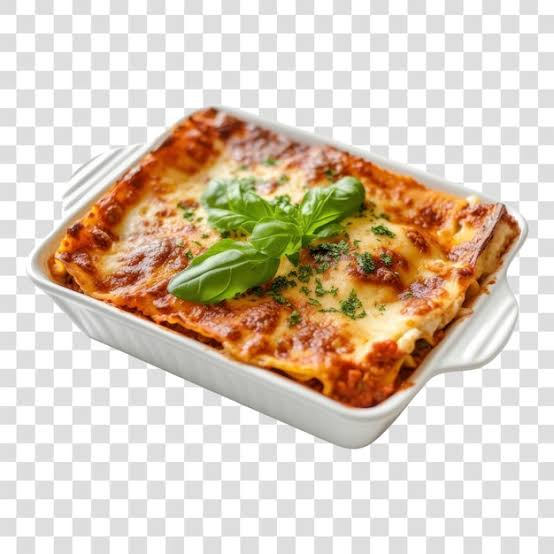

Lasagna Recipe
Home

Lasagna is a popular Italian baked pasta dish made with wide, flat noodles, savory meat or tomato sauce, and melted cheese.
Ingredients needed
- 1 pound ground beef and 1 pound Italian sausage
- 1 chopped yellow onion and 2 to 3 minced garlic cloves
- 24 to 32 ounces marinara or pasta sauce, plus 6 ounces tomato paste
- 15 ounces whole-milk ricotta cheese
- 1 to 2 large eggs to bind the mixture
- 1/2 cup freshly grated Parmesan cheese
- Fresh parsley, salt, and black pepper
- 12 to 15 dry lasagna noodles
- 1 to 2 pounds shredded low-moisture mozzarella cheese
Steps to make Lasagna
- In a large skillet or pot over medium-high heat, brown 1 pound of ground beef and 1 pound of Italian sausage. Break the meat into small pieces as it cooks. Drain excess grease if needed.
- Add 1 chopped yellow onion to the meat and cook until softened, about 5 minutes. Stir in 2–3 minced garlic cloves and cook for 30 seconds until fragrant.
- Stir in 6 ounces of tomato paste, then add 24–32 ounces of marinara or pasta sauce. Season with Italian seasoning, salt, black pepper, and a pinch of sugar. Simmer for 15–20 minutes, stirring occasionally.
- In a medium bowl, combine 15 ounces of whole-milk ricotta (or cottage cheese), 1–2 eggs, ½ cup grated Parmesan cheese, chopped fresh parsley, salt, and black pepper. Mix until smooth.
- Boil 12–15 dry lasagna noodles according to the package directions. Drain and lay them flat on a lightly oiled surface or parchment paper to prevent sticking.
- Heat the oven to 375°F (190°C). Lightly grease a 9×13-inch baking dish.
- Spread a thin layer of meat sauce on the bottom of the baking dish. Add a layer of noodles, then spread some of the ricotta mixture over the noodles. Top with meat sauce and a layer of shredded mozzarella.
- Continue layering noodles, ricotta mixture, meat sauce, and mozzarella until all ingredients are used, finishing with a final layer of meat sauce and a generous topping of mozzarella.
- Cover the dish with foil and bake for 25 minutes. Remove the foil and bake for another 20–25 minutes, or until the cheese is melted, bubbly, and lightly browned.
- Let the lasagna rest for 10–15 minutes before slicing. This helps the layers set and makes serving easier.